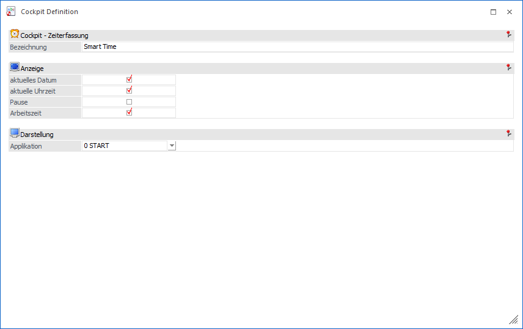
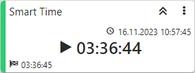

Mit Hilfe des Elements "Zeiterfassung" wird die eigene Zeiterfassung aus dem Modul WinLine SMART TIME in Form eines Widgets dargestellt.

Ø Bezeichnung
An dieser Stelle erfolgt die Eingabe des Namens, welcher in weiterer Folge als Überschrift für das Widget genutzt wird.
Ø Anzeige
In diesem Bereich kann definiert werden, was in dem Widget dargestellt werden soll.
ü aktuelle Datum
In dem Widget
wird das aktuelle Datum angezeigt (rechts oben).
ü aktuelle Uhrzeit
In dem Widget
wird die aktuelle Uhrzeit angezeigt (rechts oben).
ü Pause
In dem Widget wird die
Addition aller Pausenzeiten der Tages angezeigt (rechts unten).
ü Arbeitszeit
In dem Widget wird
die Addition aller Arbeitszeiten des Tages angezeigt (rechts unten).
Beispiel
Es wurde "aktuelle Datum", "Pause" und "Arbeitszeit" aktiviert, wobei aber noch keine Pause genommen wurde.

Ø Darstellung
Bei Anwahl des Widgets wird die Zeiterfassung geöffnet. An dieser Stelle kann definiert werden, ob die Erfassung in der WinLine START oder der WinLine INFO geöffnet werden soll.
Beispiel